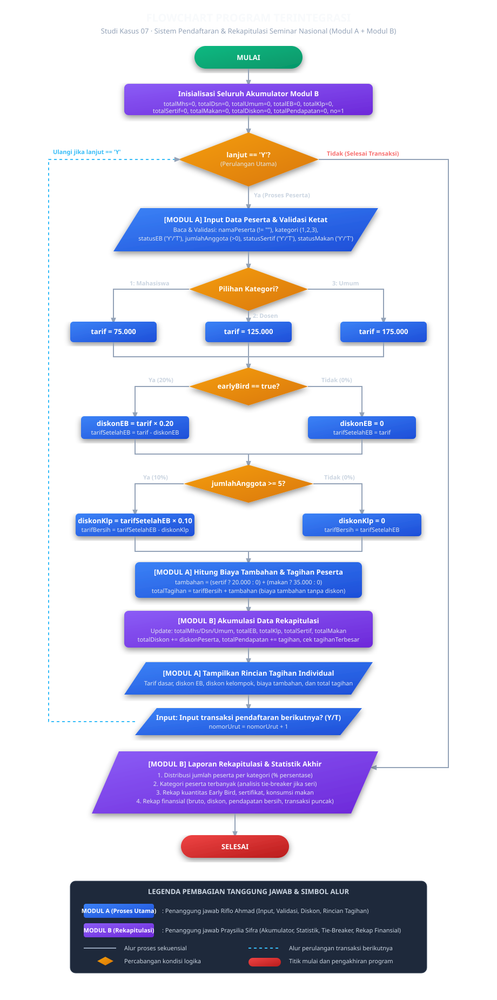

Program Terintegrasi
Seminar Nasional
Penggabungan menyeluruh Modul A (Proses Pendaftaran, Validasi Masukan, Kalkulasi Tarif, Diskon Bertingkat, dan Rincian Tagihan) dengan Modul B (Akumulasi Rekapitulasi Data, Penentuan Kategori Terbanyak dengan Tie-Breaker, dan Analisis Finansial) menjadi satu kesatuan sistem C++ yang utuh dan robust.
1. Proses & Mekanisme Integrasi
Integrasi program dilakukan dengan menggabungkan pipeline input dan pemrosesan individual dari Modul A (ditulis oleh Riflo Ahmad Nendriansyah) bersama komponen akumulator dan pelaporan rekapitulasi dari Modul B (ditulis oleh Praysilia Sifra Paradisa). Arsitektur dirancang saling mengisi tanpa redundansi:
- Sanitasi input string (mencegah bug
cin >>). - Validasi data (nama, kategori, Y/T, anggota > 0).
- Kalkulasi diskon Early Bird (20%) & Kelompok (10%).
- Penambahan fasilitas tanpa diskon.
- Penyajian rincian tagihan individual.
- Inisialisasi variabel akumulator global sesi.
- Pencatatan frekuensi kategori dan fasilitas.
- Akumulasi nilai bruto, total diskon, dan netto.
- Algoritma tie-breaker kategori peserta terbanyak.
- Penyajian laporan rekapitulasi komprehensif.
2. Flowchart Program Terintegrasi
Diagram alur terpadu menggambarkan perulangan transaksi peserta, titik percabangan diskon, akumulasi rekapitulasi, hingga pelaporan statistik akhir:

3. Source Code Final Terintegrasi
#include <iostream>
#include <string>
#include <iomanip>
#include <cmath>
#include <sstream>
using namespace std;
// ---- Konstanta Tarif & Diskon ----
const double TARIF_MAHASISWA = 75000.0;
const double TARIF_DOSEN = 125000.0;
const double TARIF_UMUM = 175000.0;
const double DISKON_EARLY_BIRD = 0.20;
const double DISKON_KELOMPOK = 0.10;
const int MIN_ANGGOTA_KELOMPOK = 5;
const double BIAYA_SERTIFIKAT = 20000.0;
const double BIAYA_MAKAN = 35000.0;
// Evaluasi Kategori Terbanyak (Fitur Modul B dengan Tie-Breaker)
string evaluasiKategoriTerbanyak(int mhs, int dsn, int umum) {
int maxVal = mhs;
if (dsn > maxVal) maxVal = dsn;
if (umum > maxVal) maxVal = umum;
if (maxVal == 0) return "Belum ada peserta";
if (mhs == dsn && dsn == umum)
return "Ketiga kategori imbang/seri (masing-masing " + to_string(mhs) + " orang)";
if (mhs == dsn && mhs == maxVal)
return "Mahasiswa & Dosen imbang terbanyak (masing-masing " + to_string(mhs) + " orang)";
if (mhs == umum && mhs == maxVal)
return "Mahasiswa & Umum imbang terbanyak (masing-masing " + to_string(mhs) + " orang)";
if (dsn == umum && dsn == maxVal)
return "Dosen & Umum imbang terbanyak (masing-masing " + to_string(dsn) + " orang)";
if (mhs == maxVal) return "Mahasiswa (" + to_string(mhs) + " orang)";
if (dsn == maxVal) return "Dosen (" + to_string(dsn) + " orang)";
return "Umum (" + to_string(umum) + " orang)";
}
int main() {
// Inisialisasi Akumulator Rekapitulasi (Modul B)
int totalMhs = 0, totalDsn = 0, totalUmum = 0;
int totalEB = 0, totalKlp = 0, totalSertif = 0, totalMakan = 0;
double totalBruto = 0, totalDiskon = 0, totalPendapatan = 0;
double tagihanTerbesar = 0;
string namaPesertaTerbesar = "-";
int nomorUrutTerbesar = 0;
int nomorUrut = 1;
char lanjut = 'Y';
while (lanjut == 'Y') {
// [Modul A] Input data dengan validasi ketat
string nama = bacaNama(" Nama peserta : ");
int kategori = bacaKategori();
bool earlyBird = (bacaYaaTidak(" Early bird? (Y/T) : ") == 'Y');
int jumlahAnggota = bacaIntPositif(" Jumlah anggota kelompok : ");
bool kelompok = (jumlahAnggota >= MIN_ANGGOTA_KELOMPOK);
bool pesanSertif = (bacaYaaTidak(" Sertifikat cetak? (Y/T) : ") == 'Y');
bool pesanMakan = (bacaYaaTidak(" Paket makan? (Y/T) : ") == 'Y');
// [Modul A] Kalkulasi tarif & diskon bertingkat
double tarif = tarifDasar(kategori);
double diskonEB = earlyBird ? tarif * DISKON_EARLY_BIRD : 0;
double tarifSetelahEB = tarif - diskonEB;
double diskonKlp = kelompok ? tarifSetelahEB * DISKON_KELOMPOK : 0;
double tarifBersih = tarifSetelahEB - diskonKlp;
double biayaTambahan = (pesanSertif ? BIAYA_SERTIFIKAT : 0) + (pesanMakan ? BIAYA_MAKAN : 0);
double tagihan = tarifBersih + biayaTambahan;
double diskonPeserta = diskonEB + diskonKlp;
// [Modul B] Akumulasi ke variabel rekapitulasi
if (kategori == 1) totalMhs++;
else if (kategori == 2) totalDsn++;
else totalUmum++;
if (earlyBird) totalEB++;
if (kelompok) totalKlp++;
if (pesanSertif) totalSertif++;
if (pesanMakan) totalMakan++;
totalBruto += (tarif + biayaTambahan);
totalDiskon += diskonPeserta;
totalPendapatan += tagihan;
if (tagihan > tagihanTerbesar) {
tagihanTerbesar = tagihan;
namaPesertaTerbesar = nama;
nomorUrutTerbesar = nomorUrut;
}
// [Modul A] Tampilkan rincian tagihan individual
tampilkanRincianTagihan(nomorUrut, nama, kategori, jumlahAnggota, earlyBird, tarif, diskonEB, diskonKlp, tarifBersih, biayaTambahan, tagihan);
nomorUrut++;
lanjut = bacaYaaTidak(" Input transaksi pendaftaran berikutnya? (Y/T) : ");
}
// [Modul B] Tampilkan Laporan Rekapitulasi & Statistik Akhir
tampilkanLaporanRekapitulasi(totalMhs, totalDsn, totalUmum, totalEB, totalKlp, totalSertif, totalMakan, totalBruto, totalDiskon, totalPendapatan, tagihanTerbesar, namaPesertaTerbesar, nomorUrutTerbesar);
return 0;
}src/program_terintegrasi.cpp dalam repositori GitHub.
4. Hasil Eksekusi Sesi Uji Terintegrasi
5. Pengujian & Trace Table Program Terintegrasi
| No | Skenario Pengujian | Masukan / Rangkaian Transaksi | Hasil yang Diharapkan | Hasil Aktual | Status |
|---|---|---|---|---|---|
| 1 | Uji Siklus Penuh Integrasi (3 Transaksi Berbeda) |
1. Mhs, EB:Y, Klp:6, Sertif:Y, Makan:Y 2. Dosen, EB:T, Klp:3, Sertif:T, Makan:T 3. Umum, EB:Y, Klp:5, Sertif:T, Makan:Y |
• Tagihan 1: Rp109.000 • Tagihan 2: Rp125.000 • Tagihan 3: Rp161.000 • Total Pendapatan: Rp395.000 • Terbanyak: Imbang ketiga kategori (1:1:1) |
Tagihan presisi Rp109k, Rp125k, Rp161k. Total Pendapatan Rp395.000, evaluasi tie-breaker mendeteksi ketiga kategori imbang. | Berhasil |
| 2 | Tie-Breaker Dua Kategori Seri |
1. Mhs, EB:T, Klp:1, Sertif:T, Makan:T 2. Dosen, EB:T, Klp:1, Sertif:T, Makan:T |
Kategori Terbanyak: Mahasiswa & Dosen imbang terbanyak (masing-masing 1) | Terbanyak: Mahasiswa & Dosen imbang terbanyak | Berhasil |
| 3 | Pemenang Tunggal Kategori Terbanyak | 1. Mhs, 2. Mhs, 3. Umum | Kategori Terbanyak: Mahasiswa (2 orang) | Terbanyak: Mahasiswa (2 orang) | Berhasil |
Trace Table Aliran Data Akumulator Antar-Modul
| Iterasi | Peserta | Modul A (Tagihan) | Modul B (totalBruto) | Modul B (totalDiskon) | Modul B (totalPendapatan) | Rekor Transaksi Puncak |
|---|---|---|---|---|---|---|
| Inisialisasi | - | - | Rp0 | Rp0 | Rp0 | Rp0 (-) |
| Transaksi 1 | Budi Santoso (Mhs) | Rp109.000 | Rp130.000 | Rp21.000 | Rp109.000 | Rp109.000 (#1 Budi) |
| Transaksi 2 | Dr. Hendra (Dosen) | Rp125.000 | Rp255.000 | Rp21.000 | Rp234.000 | Rp125.000 (#2 Hendra) |
| Transaksi 3 | Siti Rahma (Umum) | Rp161.000 | Rp465.000 | Rp70.000 | Rp395.000 | Rp161.000 (#3 Siti) |
6. Daftar Kesalahan Saat Integrasi & Solusi Perbaikan
| No | Permasalahan / Kendala yang Ditemukan | Dampak pada Program | Solusi / Tindakan Perbaikan yang Dilakukan |
|---|---|---|---|
| 1 | Konflik I/O Buffer C++: Penggunaan cin >> pada input angka meninggalkan karakter \n di buffer. |
Input nama peserta berikutnya langsung terlewat (skip) tanpa sempat diketik pengguna. | Menyeragamkan seluruh input menggunakan fungsi bacaBaris() berbasis getline() dan konversi string dengan istringstream. |
| 2 | Urutan Perhitungan Diskon: Diskon kelompok sempat dihitung dari tarif awal, bukan tarif setelah diskon Early Bird. | Potongan diskon kelompok berlebih (Rp7.500 alih-alih Rp6.000 pada tarif mahasiswa), melanggar ketentuan soal. | Memperbaiki urutan aritmetika: tarifSetelahEB = tarif - diskonEB, lalu diskonKelompok = tarifSetelahEB * 0.10. |
| 3 | Evaluasi Kategori Seri (Tie): Awalnya hanya menggunakan perbandingan > sederhana. |
Jika jumlah mahasiswa = dosen, kategori kedua tidak terdeteksi atau hanya salah satu yang ditampilkan. | Membuat fungsi tie-breaker komprehensif evaluasiKategoriTerbanyak() yang mengecek kondisi 3 kategori seri dan 2 kategori seri. |
| 4 | Biaya Fasilitas Terkena Diskon: Sertifikat dan makan sempat dijumlahkan sebelum pemotongan diskon. | Panitia merugi karena harga modal konsumsi ikut terpotong diskon 20%. | Biaya tambahan dipisahkan ke variabel biayaTambahan dan baru ditambahkan pada tarifBersih di tahap akhir. |